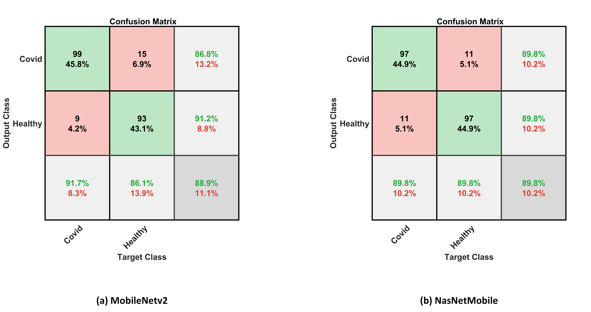
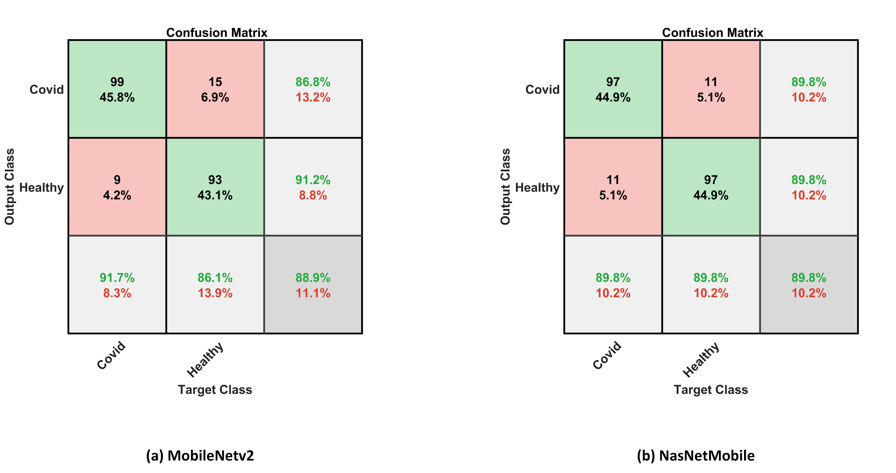

COVID-19 Cough Sound Symptoms Classification from Scalogram Image Representation using Deep Learning Models
Abstract
Deep Learning shows promising performance in diverse fields and has become an emerging technology in Artificial Intelligence. Recent visual recognition is based on the ranking of photographs and the finding of artefacts in those images. The aim of this research is to classify the different cough sounds of COVID-19 artefacts in the signals of altered real-life environments. The introduced model takes into consideration two major steps. The first step is the transformation phase from sound to image that is optimized by the scalogram technique. The second step involves feature extraction and classification based on six deep transfer models (GoogleNet, ResNet18, ResNet50, ResNet101, MobileNetv2, and NasNetmobile). The dataset used contains 1457 (755 of COVID-19 and 702 of healthy) wave cough sounds. Although our recognition model performs the best, its accuracy only reaches 94.9% based on SGDM optimizer. The accuracy is promising enough for a wide set of labelled cough data to test the potential for generalization. The outcomes show that ResNet18 is the most stable model to classify the cough sounds from a limited dataset with a sensitivity of 94.44% and a specificity of 95.37%. Finally, a comparison of the research with a similar analysis is made. It is observed that the proposed model is more reliable and accurate than any current models. Cough research precision is promising enough to test the ability for extrapolation and generalization.


 

Code
Download Code Here
Reference
Mohamed Loey, Seyedali Mirjalili, COVID-19 cough sound symptoms classification from scalogram image representation using deep learning models, Computers in Biology and Medicine, Volume 139, 2021, 105020, ISSN 0010-4825, https://doi.org/10.1016/j.compbiomed.2021.105020